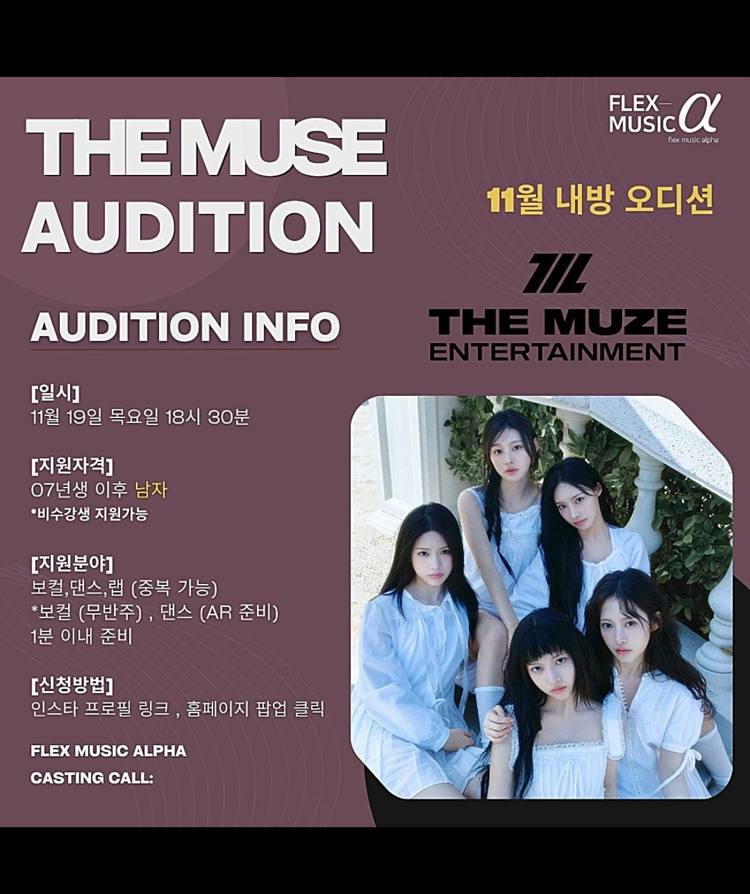

07년생이후면 07,08,09~인거 알제?
삼춘들은 끼면 안된다잉

07년생이후면 07,08,09~인거 알제?
삼춘들은 끼면 안된다잉
살아는 계시죠?
여돌 뽑아줘!
모두 응원해다오 세계를 감동시키고 올께
07학번은요?
맨앞에 일자 머리한애 누구야?
제나
제나는 맨 왼쪽애임
메이 같은데 리센느인데 뒷줄 두명 미나미, 원이
앞줄 세명 제나, 메이, 리브
단발로 자르기 전 사진인듯
하지만 빨랐죠?
https://namu.wiki/w/Runaway(RESCENE)
메이 맞은 링크 들어가서 티저 밑에 이미지 란에 b ver 보면 본문 단체 사진이랑 단체사진 복장으로 개인 사진도 있음
오디션만 보는거지 무조건 하는게 아님. 오디션봐서 맘에드는에 있음 일단 연습생으로 뽑겠지.
한번으로 그룹만들어지는게 아니라 여러번 오디션 해야함.
메이 ㅋㅋㅋㅋㅋ 무슨 오펀 천사의비밀 빌런처럼 나왔네
ㅋㅋ ㄹㅇ 저렇게 심술난표정 첨봄
이 글 보고 랩 준비하러 간다
나도 07년도 이후부터 남자긴 함
딴건 모르겠고 리센느 애들처럼 착한 애들이 좀 됐으몀 좋겠당
나 08군번인데 쌉가능이겠구나
순간 군번이나 학번 떠올렸는데 이미 거기서 늙크크다 ㅠ
리센느에 좀더 집중하는게 맞을건데
라고 본인도 생각하고 댓글들도 많았는데 저게 몇년 걸리는거라 지금이 적절한 타이밍이라 함
이제 뽑는거면 데뷔까지 못해도 2,3년 걸리는거라 미리 준비하는게 맞음.
애초에 연습생 키우려고 소속가수들이 돈 벌어다 주는거라 지금이 맞음.
당장 데뷔시킬 애들 뽑는게 아님. 자본 여유가 생겼으니 연습생 단계부터 차근히 키워나갈 후속 그룹 준비하는거.
기업에서 당연히 해야할 행동임.
시기적으로도 리센느 파워가 강하고 소속사 이미지 좋을때 좋은 인재가 몰리기 때문에 지금하는게 당연한거지.
이제 자본잠식에서 겨우 빠져나온 상태인데 리센느가 다음곡 잘된다는 보장이 없으니 하는말임
다음 노래 올해 안에 낸다는 거 같은데 지금 상황적인 것도 그렇고 여태까지 낸 노래들 보면 잘 안 될리가 없을 듯
사업 마인드가 갈리는게 그 지점임. 뭐가 맞다의 얘기가 아니라, 하나의 사업 아이템이 궤도에 올라서 결산 손실을 벗어나는 순간 다음 사업 아이템을 연구, 개발하는건 분야 막론하고 리스크는 있지만 당연하기도 한거라.
그리고 사실 진짜 연습생을 뽑느냐도 알 수 없음. 리센느와 별개로 소속사 파워를 체크할 수 있는 방법이기도 해서 오디션은 하되 연습생을 1명도 안 뽑을 가능성도 있음.
만약 네 말대로 리센느에 집중했는데도 잘 안 됐도 1년이고 3년이고 더 투자했는데 돈이 안 벌려.
그럼 저 회산 리센느 말고는 돈 벌어 올 애들이 없는데 어떻게 유지하지?
잘 되려고 할 때 투자해서 새로운 상품을 만들어야 회사가 커지는 것이지 잘되고 나서 투자하면 늦음.
지금이 딱 적기지만 빨라도 2-3년?은 준비해야 리센느 같은 인기있는 팀 겨우 하나 나올까 말까 할 듯.
연예인이란 게 인기가 언제 식을지도 모르고 언제든 나락 갈 수 있음
사업 접을게 아니면 후속타자 준비는 할 수 있을때 해야함
1907년생은?
프로페시아 마운자로 맞지만 한번 도전해본다
86년생 랩 보컬 자신있습니다!
07학번은 어떻게 안되겠습니까?
여기에 아들이 08년생인 사람도 있을텐데
쓰읍 남돌은 진짜 안될거 같은데....
학번 아니야?
국룰 사이클 돌릴때 되긴햇음 ㅇㅇ
08학번은 안될까요
1907년생은 안돼?